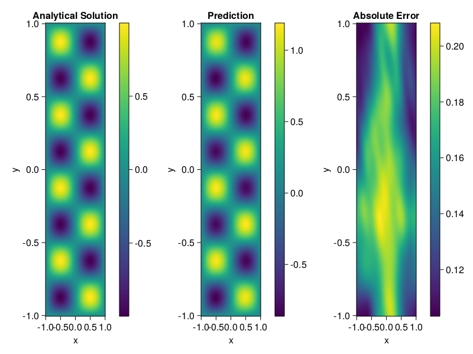

Helmholtz equation
Let us consider the Helmholtz equation in two space dimensions
\[\begin{aligned} &\Delta u(x, y)+k^{2} u(x, y)=q(x, y), \quad(x, y) \in \Omega:=(-1,1)^2 \\ &u(x, y)=0, \quad(x, y) \in \partial \Omega \end{aligned}\]
where
\[q(x, y)=-\left(a_{1} \pi\right)^{2} \sin \left(a_{1} \pi x\right) \sin \left(a_{2} \pi y\right)-\left(a_{2} \pi\right)^{2} \sin \left(a_{1} \pi x\right) \sin \left(a_{2} \pi y\right)+k^{2} \sin \left(a_{1} \pi x\right) \sin \left(a_{2} \pi y\right).\]
The excat solution is $u(x,y)=\sin{a_1\pi x}\sin{a_2\pi y}$. We chose $k=1, a_1 = 1$ and $a_2 = 4$.
using ModelingToolkit, IntervalSets, Sophon, Lux
using Optimization, OptimizationOptimJL
@parameters x,y
@variables u(..)
Dxx = Differential(x)^2
Dyy = Differential(y)^2
a1 = 1
a2 = 4
k = 1
q(x,y) = -(a1*π)^2 * sin(a1*π*x) * sin(a2*π*y) - (a2*π)^2 * sin(a1*π*x) * sin(a2*π*y) + k^2 * sin(a1*π*x) * sin(a2*π*y)
eq = Dxx(u(x,y)) + Dyy(u(x,y)) + k^2 * u(x,y) ~ q(x,y)
domains = [x ∈ Interval(-1,1), y ∈ Interval(-1,1)]
bcs = [u(-1,y) ~ 0, u(1,y) ~ 0, u(x, -1) ~ 0, u(x, 1) ~ 0]
@named helmholtz = PDESystem(eq, bcs, domains, [x,y], [u(x,y)])\[ \begin{align} \frac{\mathrm{d}^{2}}{\mathrm{d}x^{2}} u\left( x, y \right) + \frac{\mathrm{d}^{2}}{\mathrm{d}y^{2}} u\left( x, y \right) + u\left( x, y \right) =& - 166.7832748185191 \sin\left( 3.141592653589793 x \right) \sin\left( 12.566370614359172 y \right) \end{align} \]
Note that the boundary conditions are compatible with periocity, which allows us to apply BACON.
chain = BACON(2, 1, 5, 2; hidden_dims = 32, num_layers=5)
pinn = PINN(chain) # call `gpu` on it if you want to use gpu
sampler = QuasiRandomSampler(300, 100)
strategy = NonAdaptiveTraining()
prob = Sophon.discretize(helmholtz, pinn, sampler, strategy)
@time res = Optimization.solve(prob, BFGS(); maxiters=1000)u: ComponentVector{Float32}(filters = (filter_1 = (bias = Float32[-0.85754126; 0.36162785; … ; 1.0254878; -0.4046765;;]), filter_2 = (bias = Float32[0.50692606; 0.68540627; … ; 0.52597374; 1.0110041;;]), filter_3 = (bias = Float32[0.8912074; 0.5822722; … ; -0.076800816; -0.0011564413;;]), filter_4 = (bias = Float32[0.031052303; -0.037018128; … ; 1.0866654; -0.22711991;;]), filter_5 = (bias = Float32[1.066243; 0.19009313; … ; -0.114392914; 0.73779887;;])), linear_layers = (layer_1 = (weight = Float32[-0.3446627 0.33184865 … 0.39564246 0.20516016; 0.18019804 0.11384746 … 0.33505845 0.067574106; … ; -0.16052367 -0.3769334 … -0.10823351 -0.01629842; 0.07947359 0.2774141 … 0.34915742 0.32676673], bias = Float32[0.01856127; 0.0045984997; … ; -0.013581898; -0.006273424;;]), layer_2 = (weight = Float32[0.05035634 -0.3383005 … -0.38893953 -0.37788618; 0.1512895 0.19047143 … 0.115975104 -0.0930116; … ; 0.024435274 0.2584799 … 0.20967713 0.30963022; -0.1699974 0.015706548 … -0.20667171 0.1192933], bias = Float32[-0.008451259; -0.007728171; … ; 0.00065211905; 0.013995311;;]), layer_3 = (weight = Float32[-0.34379894 0.22357519 … -0.11574349 -0.038539227; 0.42609987 0.19880709 … 0.1650794 0.33262113; … ; 0.28692272 0.40197635 … 0.04258953 0.35551426; 0.42183706 0.25033164 … -0.3358103 0.210469], bias = Float32[0.017538968; 0.016191766; … ; 9.980347f-5; 0.007130891;;]), layer_4 = (weight = Float32[0.121835254 0.07811474 … -0.09496153 0.13153142; -0.4619055 0.16223225 … 0.21043512 -0.33006302; … ; 0.2464474 0.24093683 … -0.04134675 -0.064428106; -0.1775871 0.2645032 … 0.31926888 -0.257809], bias = Float32[-0.0002784285; -0.0049636164; … ; -0.0003691376; -3.195252f-5;;])), output_layer = (weight = Float32[-0.29682952 -0.22764233 … -0.16123807 0.18340981], bias = Float32[-0.0056150868;;]))Let's plot the result.
phi = pinn.phi
xs, ys= [infimum(d.domain):0.01:supremum(d.domain) for d in domains]
u_analytic(x,y) = sinpi(a1*x)*sinpi(a2*y)
u_real = [u_analytic(x,y) for x in xs, y in ys]
phi_cpu = cpu(phi) # in case you are using GPU
ps_cpu = cpu(res.u)
u_pred = [sum(phi_cpu(([x,y]), ps_cpu)) for x in xs, y in ys]
using CairoMakie
axis = (xlabel="x", ylabel="y", title="Analytical Solution")
fig, ax1, hm1 = heatmap(xs, ys, u_real, axis=axis)
Colorbar(fig[:, end+1], hm1)
ax2, hm2= heatmap(fig[1, end+1], xs, ys, u_pred, axis= merge(axis, (;title = "Prediction")))
Colorbar(fig[:, end+1], hm2)
ax3, hm3 = heatmap(fig[1, end+1], xs, ys, abs.(u_pred-u_real), axis= merge(axis, (;title = "Absolute Error")))
Colorbar(fig[:, end+1], hm3)
fig